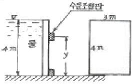
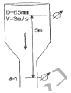
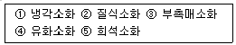

소방설비산업기사(기계) (2006-05-14 기출문제)
1과목: 소방원론
1. 기체연료가 공기 중의 산소와 혼합되면서 연소하는 현상으로 공기와 접촉하는 부분만이 반응하게 되므로 연소는 불충분하게 되고 바람 등의 영향을 받기 쉬운 연소형태는?
- 증발연소
- 자기연소
- 확산연소
- 분해연소
(정답률: 34%)

2. 가연성 가스가 완전 연소하였을 때 주로 발생되는 것은?
- 산소
- 물, 일산화탄소
- 일산화탄소, 이산화탄소
- 이산화탄소, 물
(정답률: 62%)
3. 청정소화약제의 물성을 평가하는 항목으로 심장의 역반은(심장장애현상)이 나타나는 최저 농도를 무엇이라 하는가?
- CDP
- GWP
- NOAEL
- LOAEL
(정답률: 19%)
4. 용융금속이나 슬러그 같은 고온물질이 물속에 투입되었을 때 고온 물질의 열이 저온의 물로 짧은 시간 내에 전달되어 일어나는 폭발의 형태로서 가장 올바른 것은?
- 증기폭발
- 분해폭발
- 분진폭발
- 가스폭발
(정답률: 34%)
5. 정전기의 방지대책으로 가장 거리가 먼 것은?
- 접지를 한다.
- 부도체를 사용한다.
- 공기의 상대습도를 70% 이상으로 한다.
- 공기를 이온화 한다.
(정답률: 79%)
6. 실내에서 화재가 발생하여 그 화재가 어느 정도 진행되면 어느 순간에 화재가 실 전체로 확산되면서 화재가 확대되고 실내의 온도가 급격히 상승하는 현상이 발생하는데 이러한 현상을 무엇이라고 하는가?
- 디토네이션(DETONATION)
- 화이어 볼(FIRE BALL)
- 후레시 오버(FLASH OVER)
- 디플러그레이션(DEFLAGRATION)
(정답률: 83%)
7. 다음 중 1차 안전구획에 속하는 것은?
- 계단부속실(계단전실)
- 복도
- 계단
- 피난층에서 외부와 직면할 현관
(정답률: 62%)
8. 다음 중 포소화약제의 포가 갖추어야 할 조건으로 적당하지 않은 것은?
- 화재면과의 부착성이 좋을 것
- 응집성과 안정성이 우수할 것
- 환원시간(drainage time)이 짧을 것
- 약제는 독성이 없고 변질되지 될 것
(정답률: 67%)
9. 눈, 코, 폐 등에 매우 자극성이 큰 가연성 가스로서 냉매로도 사용되는 물질은?
- 황화수소
- 아황산가스
- 이산화탄소
- 암모니아
(정답률: 59%)
10. 방재시스템의 인텔리젠트(intelligent)화와 관련이 가장 작은 것은?
- 정확한 방재정보의 파악
- 화재의 확대상황의 파악
- 방재시스템의 설치 및 관리비용 절감
- 화재시 빌딩내 잔류인원 등 정보의 정확한 파악
(정답률: 53%)
11. 다음 중 발화점(℃)이 가장 낮은 물질은?
- 아세틸렌
- 메탄
- 이황화탄소
- 프로판가스
(정답률: 53%)
12. 이상유체(ideal fluid)에 대한 설명 중 가장 올바른 것은?
- 비점성, 비압축성인 기체이다.
- 이산화탄소, 암모니아는 이상기체의 상태식에 가장 잘 부합한다.
- 분자들 간의 상호작용을 갖고 있는 유체이다.
- 실제기체가 이상기체처럼 행동하려면 온도와, 압력이 낮아야 한다.
(정답률: 50%)
13. 혐기성 미생물 등의 활동에너지의 축적에 의하여 자연발화를 일으키는 물질로서 가장 올바른 것은?
- 셀룰로이드
- 건성유
- 퇴비(퇴적물)
- 활성탄
(정답률: 47%)
14. 인간의 피난특성 중 화염, 연기에 대한 공포감으로 인하여 발화의 반대방향으로 이동하려는 성질을 무엇이라 하는가?
- 귀소본능
- 추종본능
- 지광본능
- 퇴피본능
(정답률: 79%)
15. 분말소화약제 중 A, B, C급의 어떤 화재에도 사용할 수 있는 것은?
- 제1종분말 소화약제
- 제2종분말 소화약제
- 제3종분말 소화약제
- 제4종분말 소화약제
(정답률: 89%)
16. 전기화재가 발생되는 발화 요인으로 그 비중이 가장 낮은 것은?
- 정전기
- 합선
- 누전
- 과전류
(정답률: 48%)
17. 화재시 연기가 인체에 미치는 영향은 막대하다. 다음 중 사람의 활동에 가장 큰 영향을 미치는 요인에 해당되는 것은?
- 연기 속에 포함된 수분의 양
- 연기 속에 포함된 고정탄소의 양
- 연기 발생의 시간
- 일산화탄소의 증가와 산소의 감소
(정답률: 67%)
18. 실내 연기의 이동속도에 대한 일반적인 설명으로 가장 적당한 것은?
- 수직으로 1m/s, 수평으로 5m/s 정도이다.
- 수직으로 3m/s, 수평으로 1m/s 정도이다.
- 수직으로 5m/s, 수평으로 3m/s 정도이다.
- 수직으로 7m/s, 수평으로 3m/s 정도이다.
(정답률: 80%)
19. 내화구조가 아닌 것은?
- 철골트러스
- 벽돌구조
- 철근콘크리트구조
- 석조
(정답률: 60%)
20. 할로겐화합물 소화약제를 청정소화 약제로 대체하는 이유로서 가장 올바른 것은?
- 화재 후 잔재의 처리가 쉽다.
- 오존층의 파괴효과가 적다.
- 사용이 간편하며, 다른 소화방법에 비하여 냄새가 거의 없다.
- 화재를 초기에 진압하기 쉽다.
(정답률: 57%)
2과목: 소방유체역학
21. 제 1종 분말 소화약제의 주성분은?
- 탄산수소나트륨
- 탄산수소칼슘
- 요소
- 황산알미늄
(정답률: 65%)
22. 옥외소화전 설비의 노즐 선단에서 유랑계를 사용하여 방수량을 측정한 결과 600L/min 이었다. 노즐 구경이 23mm이라면 노즐 선단의 방수압력은 약 몇 kPa 인가? (단, 물의 밀도는 1000 kg/m3 이다.)
- 346
- 437
- 515
- 764
(정답률: 43%)
23. 수면의 높이가 옥내소화전 펌프의 중심으로부터 6m위에 있는 지상 수조에 있는 물을 송수할 때 펌프의 이용 가능한 정미유효흡입양정(NPSHA)를 구하면 몇 m인가? (단, 수증기압은 2kPa이고, 총손실수두가 2m, 대기압은101.3kPa로 한다.)
- 0.3
- 6.3
- 8.1
- 14.1
(정답률: 15%)
24. 다음 측정계기 중 유량 측정에 사용되는 것은?
- rotameter
- viscometer
- interferometer
- potentiometer
(정답률: 알수없음)
25. 다음 중 일에 대한 자원(dimensions)은 어느 것인가? (단, M: 질량, L:길이, T:시간)
- ML3T-2
- MLT-1
- ML-3T-2
- ML3T2
(정답률: 6%)
26. 그림과 같이 수압을 받는 수문(3mx4m)이 수압에 의해 넘어지지 않게 하기 위한 최소 y의 값은 얼마인가?

- 2.67m
- 2m
- 1.84m
- 1.34m
(정답률: 16%)
27. 어떤 액체의 수면에서 깊이 1m 지점의 압력이 9800N/m2 이라고 할 때 이 액체의 밀도는 몇 kg/m3인가?
- 1120
- 1000
- 100
- 112
(정답률: 54%)
28. 배관내의 유량 및 유속의 측정에 속하지 않는 것은?
- 피토관에 의한 방법
- 오리피스에 의한 방법
- 벤츄리관에 의한 방법
- 위어에 의한 방법
(정답률: 54%)
29. 제 4종 분말 소화약제는 탄산수소 칼륨과 어떠한 물질과의 혼합물로 되어 있는가?
- 제일인산 암모늄
- 요소
- 메타인산
- 질소(암모니아)
(정답률: 38%)
30. 지름 5cm인 구가 대류에 의해 열을 외부공기로 방출한다. 이 구는 50W의 전기히터에 의해 내부에서 가열되고 있다. 구 표면과 공기 사이의 온도 차가 50℃라면 공기와 구 사이의 대류 열전달 계수는 얼마인가?
- 12/W(m2℃)
- 23/W(m2℃)
- 347/W(m2℃)
- 458/W(m2℃)
(정답률: 6%)
31. 소화약제에 대한 화학식 중 맞지 않는 것은?(오류 신고가 접수된 문제입니다. 반드시 정답과 해설을 확인하시기 바랍니다.)
- Halon 2402-C2F4Br
- Halon 1211-CF2CIBr
- 제1종 소화분말 - Na2HCO3
- 제3종 소화분말 – NH2H2PO4
(정답률: 19%)
32. 그림과 같이 수직관로를 통하여 물이 위에서 아래로 흐르고 있다. 손실을 무시할 때 사항에 설치된 압력계의 눈금이 동일하게 지시되도록 하려면 지름(d)을 얼마로 하여야 하는가?

- 30mm
- 35mm
- 40mm
- 45mm
(정답률: 45%)
33. 이상기체에서 온도가 일정한 경우 부피(V)와 압력(P)의 관계를 맞게 표현한 것은?
- P/V = 일정
- P/V2 = 일정
- PV = 일정
- PV2 = 일정
(정답률: 45%)
34. 포소화약제의 주된 소화원리로 가장 적합한 것은?

- ①, ②
- ②, ③
- ③, ④
- ③, ⑤
(정답률: 44%)
35. 초기체적 0인 풍선을 지름 60cm까지 팽창시키는데 필요한 일의 양은 몇 kJ 인가? (단, 풍선 내부의 압력은 표준대기압 상태로 일정하고, 풍선은 구(球)로 가정한다.)
- 11.46
- 12.18
- 114.6
- 121.8
(정답률: 0%)
36. 톤도 60℃, 압릭 100kPa인 산소가 지름 1Umm인 관폭을 흐르고 있다. 임계 레이놀즈수가 2100일 때 층류로 흐를 수 있는 최대 평균속도(m/s)와 유림(m3/s)은? (단, 점성계수는 μ=23x10-6 kg/m·s 이고, 기체상수는 R=260 N·m/kg·K 이다.)
- 4.18, 3.28x10-4
- 41.8, 32.8x10-4
- 31.8, 24.8x10-4
- 3.18, 2.48x10-4
(정답률: 22%)
37. 물이 담긴 탱크의 밑바닥 옆면에 지름 5mm의 구멍이 뚫렸다. 탱크는 오리피스의 단면에 비하여 무한히 크다. 오리피스 중심으로부터 물이 몇 m 높이로 탱크에 담겨 있을 때 10 m/s로 물이 분출되겠는가? (단, 오리피스의 속도계수는 C2=0.9 이다.)
- 5.1
- 6.3
- 7.5
- 8.7
(정답률: 22%)
38. 원관 유동에서 레이놀즈수가 1500이면 관마찰계수는?
- 0.0316
- 0.0427
- 0.0646
- 0.4276
(정답률: 56%)
39. 배관내의 흐르는 물의 수격작용(water hammer)을 방지하는 대책으로 잘못된 것은?
- 조압수조(surge tank)를 설치한다.
- 밸브를 펌프 송출구에서 멀게 설치한다.
- 밸브를 서서히 조작한다.
- 관경을 크게 하고 유속을 낮게 한다.
(정답률: 59%)
40. 수평 배관 내를 흐르는 물의 유속이 7m/s 이다. 이것을 속도수두로 환산하면 얼마인가?
- 2.5m
- 5.0m
- 12.5m
- 15.0m
(정답률: 40%)
3과목: 소방관계법규
41. 특수가연물에 해당 되지 않는 것은?
- 면화류
- 유황
- 합성수지류
- 석탄 및 목탄류
(정답률: 48%)
42. 다음의 소방시설 중 하자보수대상 소방시설과 하자보수 보증기간이 틀린 것은?
- 옥내소화전설비 : 3년
- 비상방송설비 : 3년
- 자동화재탐지설비 : 3년
- 물분무등소화설비 : 3년
(정답률: 70%)
43. 다음 중 소방검사자의 자격 기준에 미치지 못하는 사람은?
- 소방공무원으로서 소방기술사 자격을 취득한 자
- 소방공무원으로서 소방시설관리사 자격을 취득한 자
- 소방공무원으로서 소방설비기사 또는 소방설비산업기사 자격을 취득한 자
- 소방공무원으로서 국가기술자격법에 의한 산업안전기사와 관련된 자격을 취득한 자
(정답률: 43%)
44. 위험물 제조소의 게시판에 반드시 기재할 사항이 아닌 것은?
- 위험물 저장 최대수량
- 위험물의 유별·품명
- 위험물에 대한 대처방법
- 안전관리자의 성명 또는 직명
(정답률: 43%)
45. 소방시설업자는 등록사항의 변경이 있는 때에는 변경일로 부터 몇 일 이내에 서류를 시·도지사에게 제출하여야 하는가?
- 7일 이내
- 14일 이내
- 30일 이내
- 60일 이내
(정답률: 34%)
46. 특정소방대상물은 방화관리자를 선임해야 되는데 다음 중 방화관리자의 업무로서 가장 거리가 먼 것은?
- 소방시설 그 밖에 소방관련시설의 유지·관리
- 자위소방대의 조식
- 위험물질 보관방법 강구
- 화기취급의 감독
(정답률: 54%)
47. 제4류 위험물에 속하지 않는 것은?
- 아염소산염류
- 특수인화물
- 알코올류
- 동식물유류
(정답률: 65%)
48. 소방본부장 또는 소방서장은 원활한 소방활동을 위하여 소방용수시설 및 소방활동에 필요한 지리조사를 실시하여야 한다. 조사 회수로 옳은 것은?
- 월 1회 이상
- 월 2회 이상
- 연 1회 이상
- 연 2회 이상
(정답률: 36%)
49. 소방본부장·소방서장 또는 소방대장은 사람을 구출 하거나 불이 번지는 것을 막기 위하여 필요한 때에는 화재가 발생하거나 불이 번질 우려가 있는 소방대상물 및 토지를 일시적으로 사용하거나 그 사용의 제한 또는 소방활동에 필요한 처분을 할 수 있는데 이를 무엇이라 하는가?
- 피난명령
- 소화종사명령
- 강제처분명령
- 소방응원
(정답률: 45%)
50. 위험물 중 제6류 위험물 (산화성 액체)의 품명에 속하지 않는 것은?
- 질산
- 과염소산
- 황린
- 과산화수소
(정답률: 36%)
51. 형식승인을 얻어야 할 소방용 기계·기구 등이 아닌 것은?
- 감지기
- 휴대용 비상조명등
- 수동식소화기
- 방염액
(정답률: 19%)
52. 소방시설업 중 설계도서에 따라 소방시설을 신설·증설·개설·이전 및 정비를 하는 소방시설업은?
- 소방공사감리업
- 소방시설설계업
- 소방시설공사업
- 소방시설관리업
(정답률: 32%)
53. 전문 소방시설 설계업의 기술인력·등록기준에서 주된 기술인력과 보조기술인력의 최소 인원수로 옳은 것은?
- 주된 기술인력 : 1명, 보조기술인력 : 2명
- 주된 기술인력 : 2명, 보조기술인력 : 2명
- 주된 기술인력 : 1명, 보조기술인력 : 3명
- 주된 기술인력 : 2명, 보조기술인력 : 3명
(정답률: 65%)
54. 옥내소화전설비를 설치하여야 하는 특정소방대상물은?
- 공연장으로서 연면적이 1,000m2 인 것
- 음식점으로서 연면적이 1,000m2 인 것
- 지하층으로서 바닥면적이 200m2 인 것
- 여관으로서 연면적이 1,500m2 인 것
(정답률: 50%)
55. 다음 중 소방신호가 아닌 것은?
- 경계신호
- 발화신호
- 해제신호
- 비상신호
(정답률: 67%)
56. 소화활동설비에서 제연설비를 설치하여야 하는 특정소방대상물의 기준으로 틀린 것은?
- 문화집회 및 운동시설로서 무대부의 바닥면적이 200m2 이상일 것
- 근린생활시설·위락시설·판매시설 및 영업시설, 숙박시설로서 지하층 또는 무창층의 바닥면적이 1,000m2 이상인 것
- 지하가(터널을 제외한다)로서 연면적 1,000m2 이상인 것
- 지하가 중 터널로서 길이가 500m 이상인 것
(정답률: 46%)
57. 다음 중 물분무등소화설비가 아닌 것은?
- 스프링클러설비
- 포소화설비
- 분말소화설비
- 청정소화약제소화설비
(정답률: 39%)
58. 소방시설 중 소화설비에 해당되지 않는 것은?
- 수동식소화기
- 케비넷형 자동소화기기
- 시각경보기
- 자동확산소화용구
(정답률: 29%)
59. 다음 중 소방대상물이라고 볼 수 없는 것은?
- 산림
- 건축물
- 차량
- 사람
(정답률: 70%)
60. 위험물 제조소 등의 완공검사필증을 잃어버려 재교부를 받은 자가 잃어버린 완공검사필증을 발견한 경우 에는 이를 몇 일 이내에 완공검사필증을 재교부한 시·도 지사에게 제출해야 하는가?
- 즉시
- 15일
- 10일
- 30일
(정답률: 8%)
4과목: 소방기계시설의 구조 및 원리
61. 위험물 저장탱크에 고정포 방출구 포 소화설비를 설치하고 탱크주위에 보조포 소화전을 2개소 설치하였다. 포 소화전에 필요한 소화약제의 양은? (단, 소화 약제는 6% 단백포이다.)
- 240ℓ 이상
- 480ℓ 이상
- 720ℓ 이상
- 950ℓ 이상
(정답률: 9%)
62. 할로겐화합물 소화설비의 특징으로 적당하지 않은 것은?
- 오존층을 보호하여 준다.
- 연소억제 작용이 크며, 소화능력이 크다.
- 금속에 대한 부식성이 적다.
- 변질, 분해 등이 적다.
(정답률: 48%)
63. 자동식 소화기에 사용되는 가스누설 경보 차단장치는 주방배관의 개폐밸브로부터 몇 m 이하의 위치에 설치하여야 하는가?
- 1.0
- 1.5
- 2.0
- 2.5
(정답률: 0%)
64. 스프링클러 설비의 가압송수장치에 속하지 않는 것은?
- 압력수조
- 고가수조
- 송수펌프
- 배수펌프
(정답률: 17%)
65. 분말 소화설비에 사용하는 소화 약제 중 제 3종 분말은 어느 것을 주성분으로 한 것인가?
- 탄산수소칼륨
- 인산염
- 탄산수소나트륨
- 요소
(정답률: 74%)
66. CO2 소화기를 설치할 때 주의사항으로서 옳지 않은 것은?
- 직사광선이 있는 곳을 피한다.
- 고온, 다습한 곳을 피한다.
- 용기증명이 있고 또한 유효기간 내에 있는 것을 확인하고 설치한다.
- 주로 일반 화재용으로 설치한다.
(정답률: 70%)
67. 지하에 설치하는 소화용수 설비의 소요수량이 95m3일 경우에 몇 개의 채수구를 설치하여야 하는가?
- 1개
- 2개
- 3개
- 4개
(정답률: 25%)
68. 옥내소화전 설비의 가압송수장치에 관한 사항 중 옳지 않은 것은?
- 체절운전시 수온의 상승을 방지하기 위한 순환배관을 설치할 것
- 정격 부하운전시 펌프의 성능을 시험하기 위한 배관을 설치할 것
- 펌프의 토출측에는 연성계 또는 진공계를 설치할 것
- 기동용 수압 개폐장치를 사용할 경우 압력챔버 용적은 100[ℓ]이상의 것으로 할 것
(정답률: 44%)
69. 지하층을 제외한 11층 이상의 소방대상물로서 폐쇄형 스프링클러 헤드의 설치개수가 30개 일때 수원의 수량 중 맞는 것은?
- 16[m3]
- 32[m3]
- 48[m3]
- 64[m3]
(정답률: 44%)
70. 건식형 연결송수관설비에서 송수구 부근 장치의 부착순서를 바르게 적은 것은?
- 송수구 → 자동배수밸브 → 체크밸브 → 자동배수밸브
- 송수구 → 체크밸브 → 자동배수밸브 → 체크밸브
- 송수구 → 체크밸브 → 자동배수밸브 → 밸브
- 송수구 → 자동배수밸브 → 체크밸브 → 밸브
(정답률: 56%)
71. 제면설비 중 하나의 제연구역 면적은 원칙적으로 얼마 이내 이어야 하는가?
- 700m2
- 1,000m2
- 1,500m2
- 2,000m2
(정답률: 84%)
72. 이산화탄소 소화약제의 전역방출방식에 있어서 종이, 목재, 석탄섬유류, 합성수지류 등 심부화재 방호대상물의 고무류, 면화류창고, 모피창고, 석탄창고, 집진설비 등에 대한 CO2 가스의 설계농도와 체적당 소화약제의 양은?
- 설계농도 50%, 소화약제의 양 1.6kg
- 설계농도 50%, 소화약제의 양 2.0kg
- 설계농도 75%, 소화약제의 양 2.0kg
- 설계농도 75%, 소화약제의 양 2.7kg
(정답률: 25%)
73. 소화펌프의 원활한 기동을 위하여 설치하는 물 올림 장치는 어느 경우에 필요한가?
- 수원이 펌프보다 높을 경우
- 수원이 펌프보다 낮을 경우
- 수원이 펌프와 수평일 때
- 수원에 관계없이 설치
(정답률: 70%)
74. 특수 가연물 저장실에 설치하는 물 분무소화설비에서 수원의 수량은 얼마나 되겠는가? (단, 바닥면적은 m2로 표시)
- 바닥면적 × 10ℓ/min × 20분
- 바닥면적 × 8ℓ/min × 20분
- 바닥면적 × 4ℓ/min × 20분
- 바닥면적 × 30ℓ/min × 20분
(정답률: 70%)
75. 완강기의 최대 사용 하중은 몇 kgf 이상인가?
- 100kgf
- 110kgf
- 120kgf
- 130kgf
(정답률: 7%)
76. 포 소화설비에서 팽창비에 따라 저발포, 고발포로 구분하는데 팽창비는?
- 방사된 포원액의 체적/포원액 체적
- 방사된 포수용액의 체적/포원액 체적
- 방사된 포원액의 체적/포수용액 체적
- 방사된 포의 체적/포수용액 체적
(정답률: 19%)
77. 연결살수설비의 전용 헤드를 사용하는 경우 배관의 구경이 50mm 일 때 하나의 배관에 부착하는 살수헤드 의 개수는 몇 개 인가?
- 3개
- 4개
- 6개
- 10개
(정답률: 32%)
78. 누수, 기타의 이유로 스프링클러 설비의 유수검지장치 2차측 압력이 저하되어 발생되는 유수감지장치의 오동작을 미연에 방지하기 위하여 설치하는 것은?
- 슈퍼비죠리 콘트롤 판넬(supervisory control panel)
- 리타딩챔버(retarding chamber)
- 압력스위치(pressure switch)
- 익죠스트(exsauster)
(정답률: 54%)
79. 물 분부소화설비의 제어밸브 설치위치를 나타낸 것이다. 옳은 것은?
- 바닥으로부터 0.5m 이상 1m 이하의 높이
- 바닥으로부터 0.8m 이상 1.5m 이하의 높이
- 바닥으로부터 1m 이상 1.8m 이하의 높이
- 바닥으로부터 1.5m 이상 2m 이하의 높이
(정답률: 60%)
80. 옥외소화전에 관한 설명이다. 옳은 것은?
- 호스는 구경 40mm 이상의 것으로 한다.
- 노즐 선단에서 방수압력 1.7kgf/cm2 이상, 방수량이 130ℓ/min 이상의 가압송수장치가 필요하다.
- 압력챔버를 사용할 경우 그 용적은 50ℓ이하의 것으로 한다.
- 소화전함은 옥외소화전마다 그로부터 5m이내에 설치하여 문짝의 면적은 0.5m2 이상으로 한다.
(정답률: 62%)